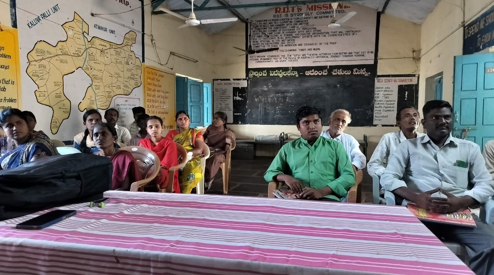
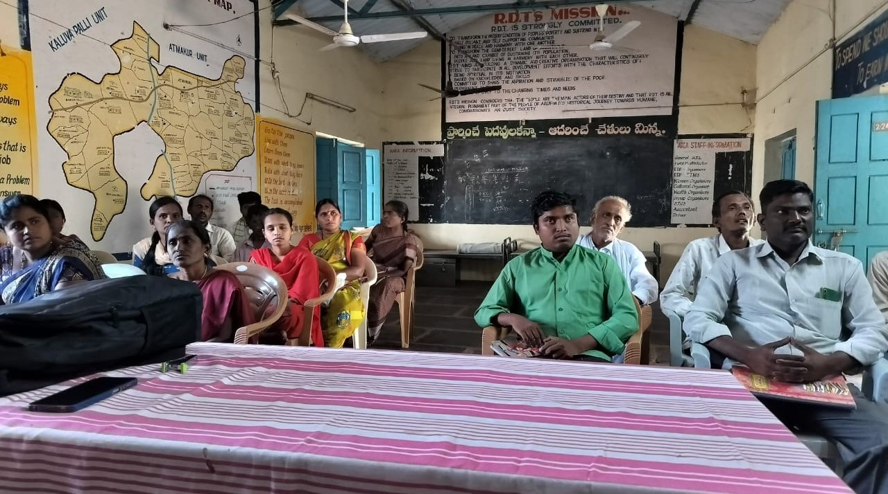

Self Help Groups and Federations
 

Mandal Samkhya:
District-level federations further the cause of inclusion through emphasis on resource mobilisation, accessibility, protection of rights and privileges and tackling violence and discrimination.Eligibility to be part of Mandal Samkhya:
Frequency Table of Village Distribution of Atmakuru Mandal
Upon data analysis, it is evident that Atmakuru village exhibits the highest enrolment percentage within the Mandal Samakya under the Disability Inclusive Development Sector, with 18.18% of members. Following closely is Sanapa, where 17.17% of members are enrolled, making it the second-highest among the Mandal Samakya Members across all villages.
Membership of the Atmakuru Mandlal
The above table consists of sample of 100 Mandal Samakya group members from different villages under the Disability Inclusive Development Sector by the Rural Development Trust.
Analysis of the provided sample data reveals a noteworthy trend in the Disability Inclusive Development Sector, where the BC caste demonstrates a substantial contribution, accounting for approximately 60% of the total population within the sector. On the other hand, it becomes evident that the preponderance of members enrolled in the Disability Inclusive Development Sector is male, constituting 62.62%. Following closely, the female membership stands at 37.37%, highlighting the gender distribution within the sector